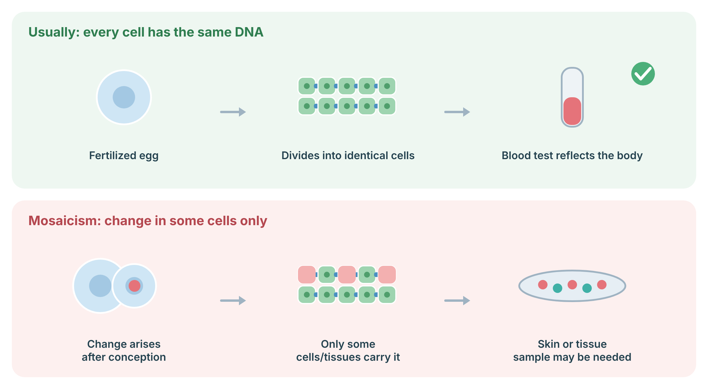
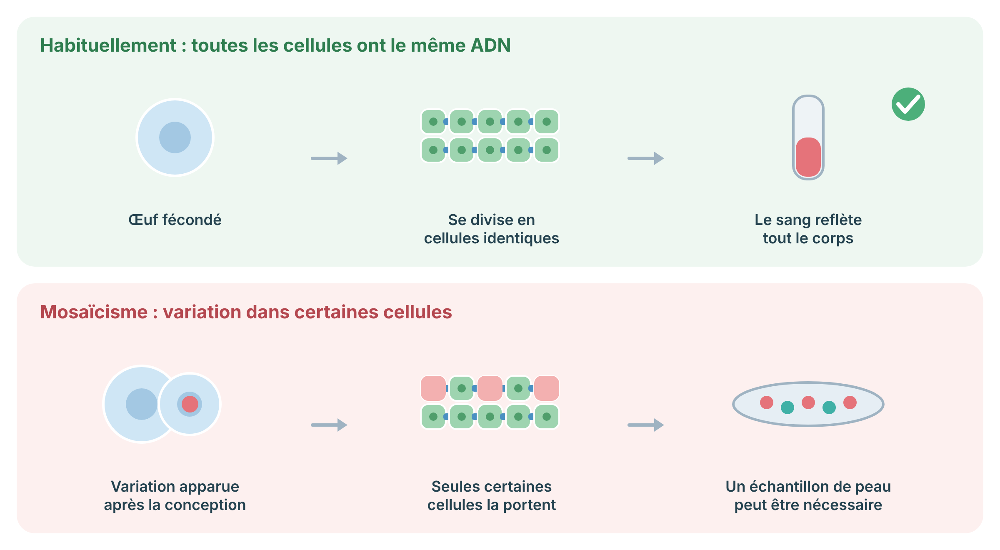

How skin cells are grown in the laboratory for chromosome, enzyme, and RNA studies, and why it takes several weeks.
Fibroblasts are cells found in the skin. After a small skin biopsy, the laboratory grows these cells in dishes until there are enough to test. This takes time, usually several weeks, which is why results are slower than blood tests. Once grown, the cells can be frozen and kept for future tests.
Usually every cell in the body carries the same DNA. If a genetic change arises after conception, only the cells that descend from that first changed cell carry it (mosaicism). The change may then be found in some tissues but not in blood, which is why a skin biopsy grown in the lab (fibroblast culture) or another tissue sample is sometimes needed to make the diagnosis.

Sources: D'Gama AM, Walsh CA. Nat Neurosci 2018;21:1504–14 (PubMed).
Typical turnaround: about 2–6 weeks for growth before testing begins; total time depends on the downstream test.
Coordinate with the receiving laboratory before the biopsy (medium, transport days, requisition).
This is general information and does not replace a consultation. What a result means for you and your family is best worked out with your genetics team.
Comment les cellules de la peau sont cultivées en laboratoire pour des études chromosomiques, enzymatiques et de l'ARN, et pourquoi cela prend plusieurs semaines.
Les fibroblastes sont des cellules de la peau. Après une petite biopsie cutanée, le laboratoire fait croître ces cellules dans des boîtes jusqu'à ce qu'il y en ait assez pour les analyser. Cela prend du temps, habituellement plusieurs semaines; c'est pourquoi les résultats sont plus lents que ceux des tests sanguins. Une fois cultivées, les cellules peuvent être congelées et conservées pour des tests futurs.
Habituellement, toutes les cellules du corps portent le même ADN. Si une variation génétique apparaît après la conception, seules les cellules issues de la première cellule modifiée la portent (mosaïcisme). La variation peut alors être présente dans certains tissus mais pas dans le sang; c’est pourquoi une biopsie de peau mise en culture (culture de fibroblastes) ou un autre échantillon de tissu est parfois nécessaire pour poser le diagnostic.

Sources : D'Gama AM, Walsh CA. Nat Neurosci 2018;21:1504–14 (PubMed).
Délai habituel : environ 2 à 6 semaines de croissance avant le début des analyses; le délai total dépend du test effectué ensuite.
Coordonner avec le laboratoire receveur avant la biopsie (milieu, jours de transport, requête).
Ceci est de l'information générale et ne remplace pas une consultation. Ce qu'un résultat signifie pour vous et votre famille se précise le mieux avec votre équipe de génétique.